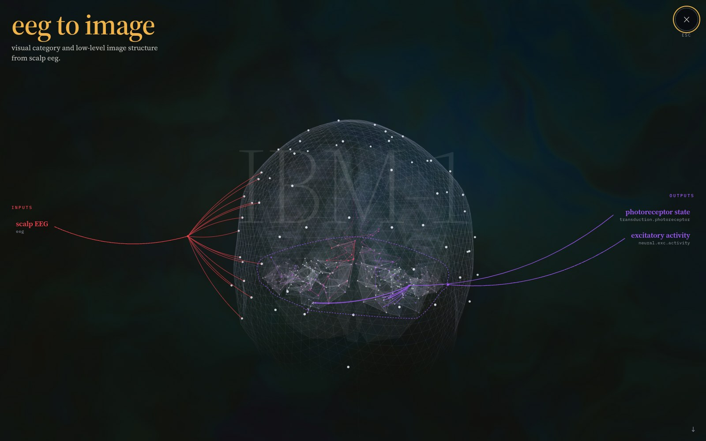

01 · materialized
Read the picture someone is looking at
measuredAn image goes into a declared optic nerve, through cortical dynamics, and out as 64-channel EEG — then back, retrieving which of 200 images a person was shown.
- 63.5%top-1 on the corpus's designated test set, 200 images, median rank 1. Chance is exactly 1/200, so this is 127× chance.
- 48.4× → 1.00×through the sheet to a precentral-only readout with ports verified disjoint, against a severed sheet. The severed arm has across-image variance of exactly zero.
- 8.69% → 0.44%when the optic nerve port is displaced to a random region of equal size. Where the structure is declared is doing the work.
The control that bites: a dynamics-free encoder, selected the same way, matches this. The substrate is load-bearing inside the model; it has not beaten a purpose-built baseline.
